01
Site Analysis & Field Research
“공간의 조건과 맥락을 읽는 단계”
현장 공간의 구조, 빛 환경, 동선, 제약 조건 분석
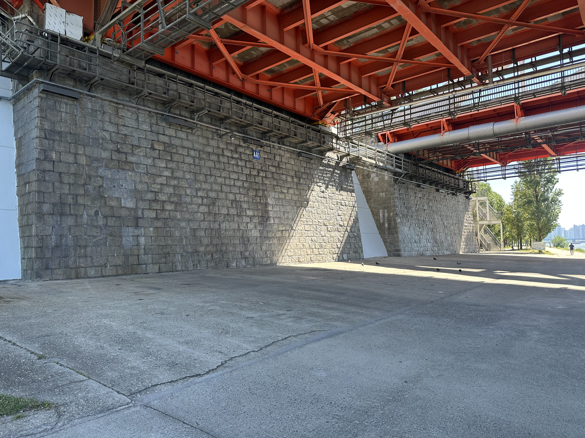
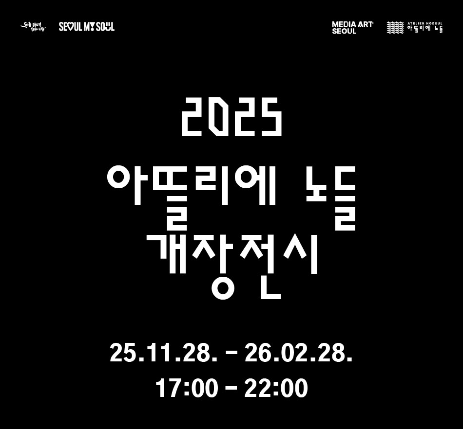
노들섬
2025
커스텀엑스, 미디어아트 서울
INTEGRATED PROCESS
Lightchaser는 공간 설계부터 구현까지 전 과정을 책임지며, 콘텐츠와 기술이 분리되지 않는 미디어 파사드를 만듭니다.
WORK OVERVIEW
Lightchaser는 아뜰리에 노들 미디어파사드 프로젝트에 3D 스캐닝, 미디어파사드 가이드 도면 제작, 설계 협력 파트로 참여했습니다.
우리는 건물을 단순한 투사면이 아니라, 하나의 서사를 가진 ‘장소’로 읽고 그 특이점을 빛으로 번역합니다.현장의 실제 조건을 라이다 센서로 정밀하게 계측하고, 콘텐츠를 제작하는 작가분들이 파사드를 할 수 있는 기술적 기반을 구축했습니다.
결과적으로 아뜰리에 노들의 외피는 이미지가 덧씌워지는 화면이 아니라, 벽돌, 정면, 바닥의 구조적 특징을 활용할 수 있도록 설계되었습니다.
“공간의 조건과 맥락을 읽는 단계”
현장 공간의 구조, 빛 환경, 동선, 제약 조건 분석

“파사드 기술 구조를 설계하는 단계”
하드웨어 : 50,000 ansi 프로젝터 6대
투사방식 : 정면 4대 프로젝터 투사, 바닥 2대 프로젝터 투사
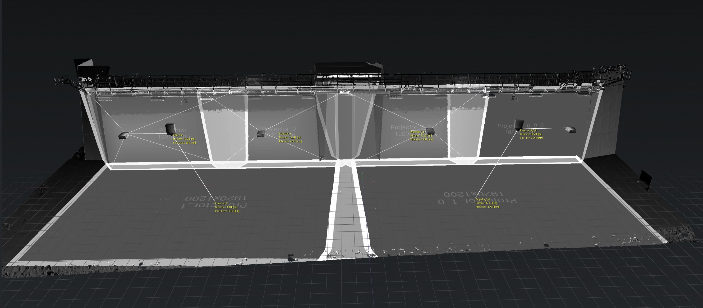
“공간을 도식화 하는 단계”
공간 스캐닝
: 공간 도면화를 위한 라이다 스캐닝 작업
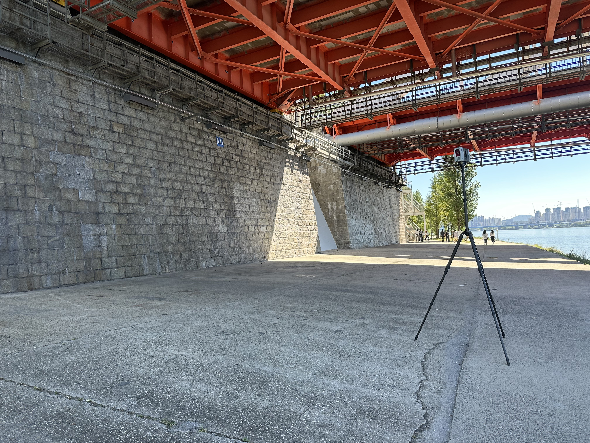
3D 공간 모델링, 콘텐츠 가이드 설계
: 공간의 특징을 활용한 콘텐츠 가이드 설계 (벽돌, 바닥, 구조
분리)
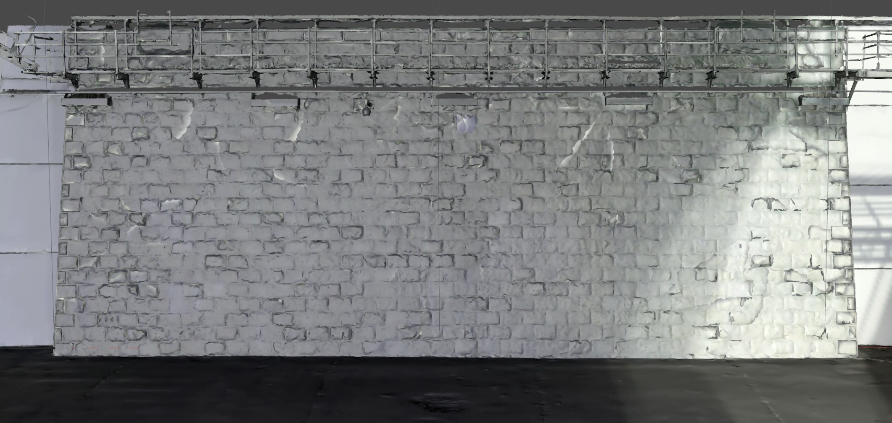
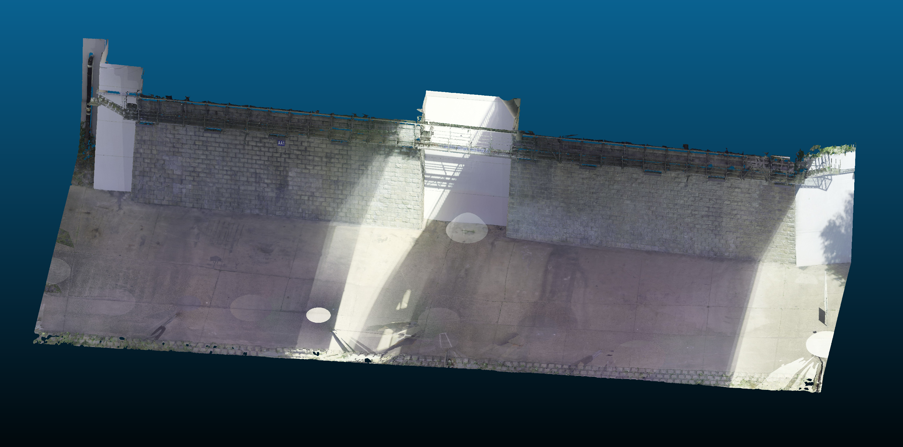
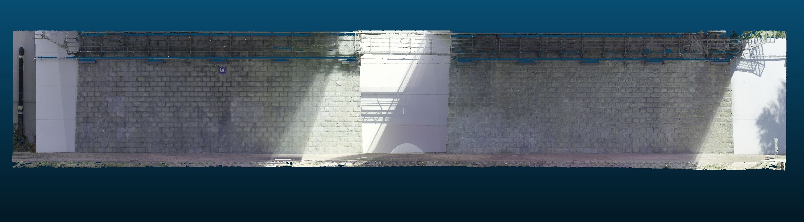
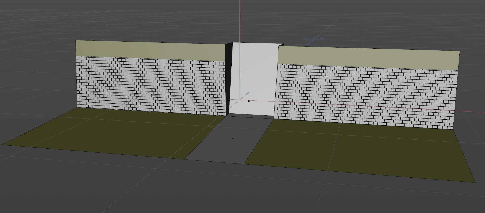
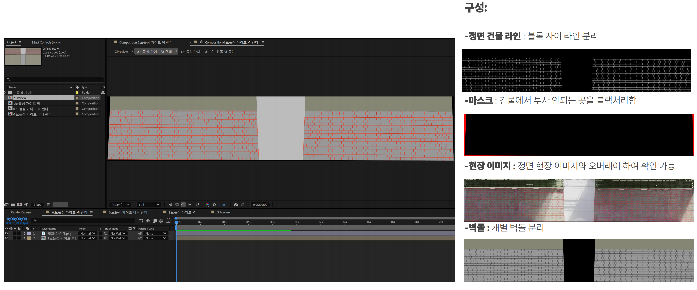
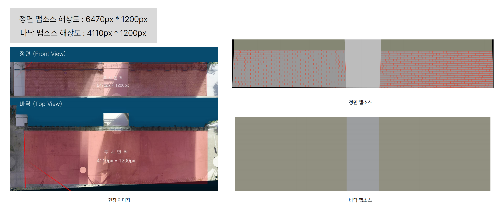
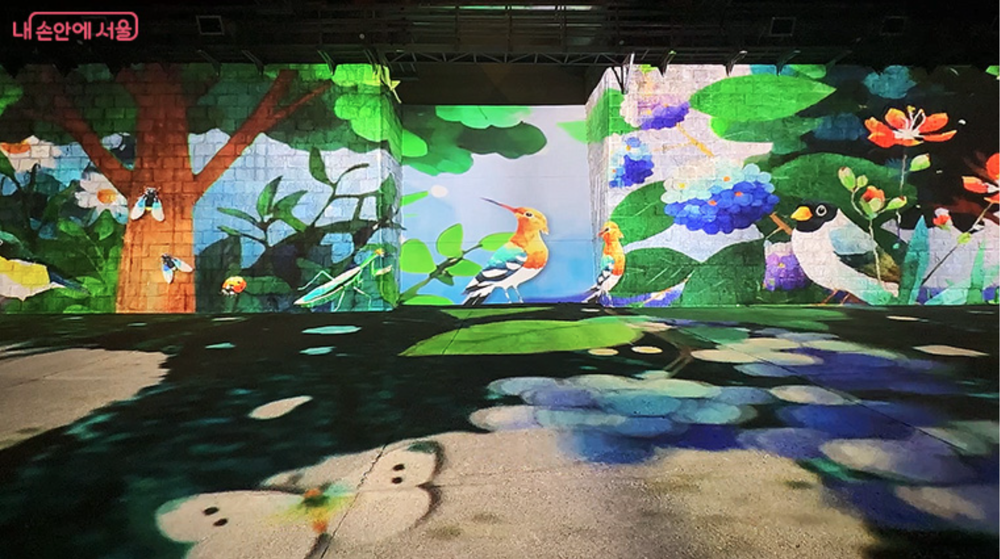
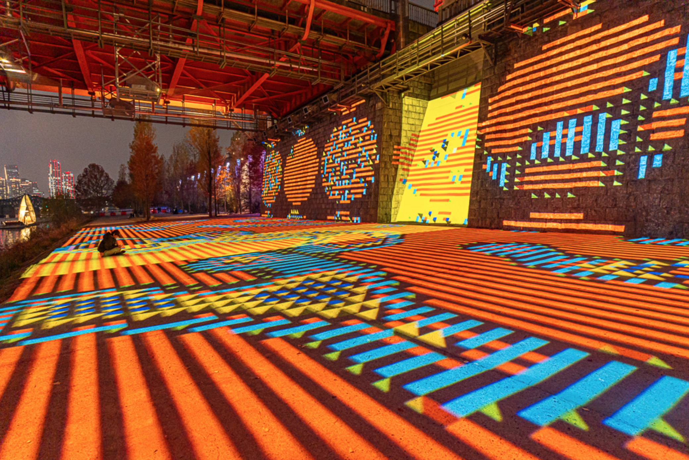
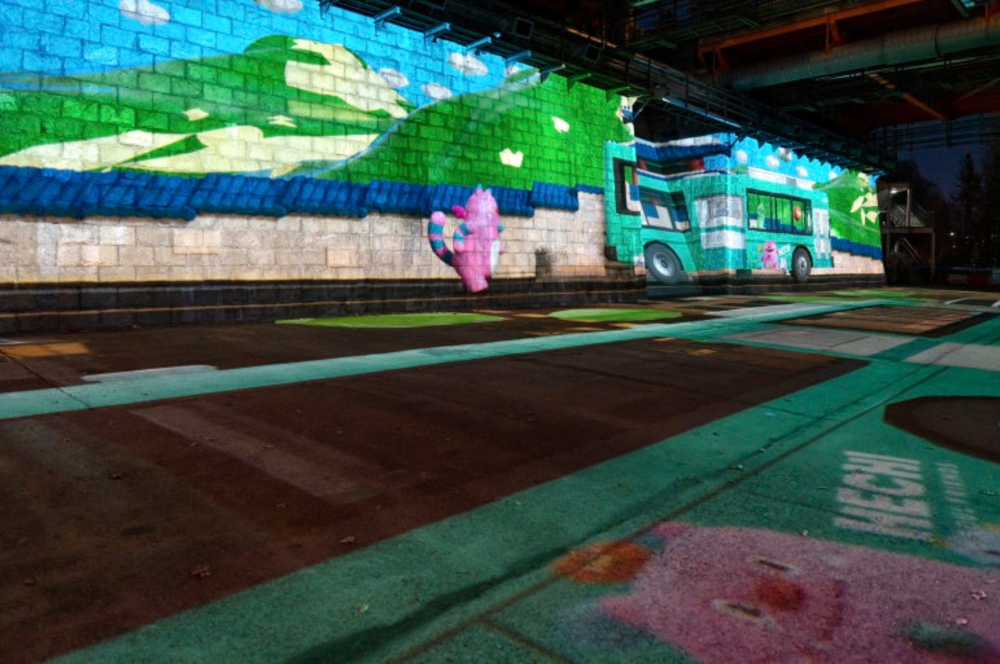